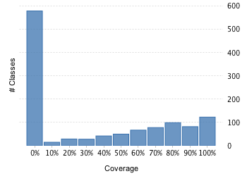
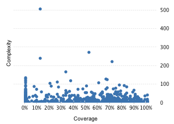

Project overview
Code coverage 1,374 classes, 25,892 / 76,663 elements
0.337737933.8%
Test results 765 / 792 tests 373.87 secs
0.9659090696.6%
Code metrics
15,962
50,159
10,542
1,374
1,033
144
161,184
108,417
20,871
0.42
4.76
7.67
9.54
1.98
Class Coverage Distribution

Class Complexity

Coverage tree map
Generating Coverage Tree Map. Please wait...

Top 20 project risks
DictionaryRule
Number2BytesConverter.NumberBytesCodec
RawQueryLastHacker
CuboidStatsUtil
AppendTrieDictionaryBuilder
ScanRangePlannerBase
RandomSampler
Bytes.LexicographicalComparerHolder.UnsafeComparer
KylinResultSet
ColumnGenerator
QueryUtil.DefaultQueryTransformer
IdentityUtils
TupleFilterSerializer
DictionaryGenerator
CuboidCLI
SortedIteratorMergerWithLimit.MergedIteratorWithLimit
TimedJsonStreamParser
QueryUtil
DimensionEncoding
AclService
Most complex packages
| 1. | 0.3824165238.2% |
org.apache.kylin.common.util 1211 |
| 2. | 0.589041158.9% |
org.apache.kylin.metadata.model 952 |
| 3. | 0.357716635.8% |
org.apache.kylin.rest.service 897 |
| 4. | 0.00% |
org.apache.kylin.storage.hbase.cube.v2.coprocessor.endpoint.generated 886 |
| 5. | 0.1368638313.7% |
org.apache.calcite.sql2rel 748 |
Most complex classes
| 1. | 0.1291843512.9% |
SqlToRelConverter 512 |
| 2. | 0.522366552.2% |
KylinConfigBase 278 |
| 3. | 0.1254437912.5% |
Bytes 246 |
| 4. | 0.7141148471.4% |
CubeDesc 228 |
| 5. | 0.335832133.6% |
QueryService 173 |